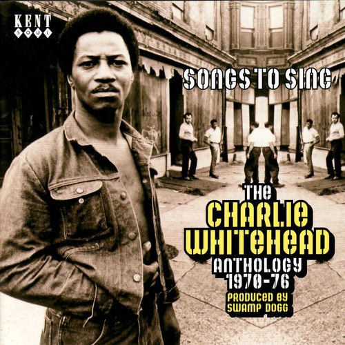

Charlie Whitehead
Charlie Whitehead was an American soul singer from Newsoms, Virginia.
Complete Discography & Tracklists (3)
1977 Whitehead at Yellowstone 🎵 0 Tracks
No tracks registered.
2008 Songs To Sing - The Charlie Whitehead Anthology 🎵 21 Tracks
2013 Charlie Whitehead & The Swamp Dogg Band (Digitally Remastered) 🎵 0 Tracks
No tracks registered.